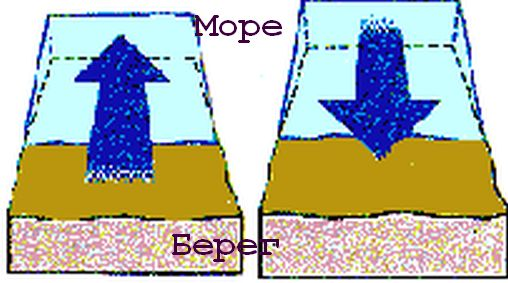

В нашем описании экспедиции Непобедимой армады к берегам Англии мы подошли к такому моменту, когда судьбу испанского флота стали решать не доблестные английские моряки, а суровые силы природы. И вот тут, я думаю, самое время остановиться и посмотреть, какое отражение эти самые природные обстоятельства находят в нашем человеческом языке. Я, естественно, не лексикограф, но никто ведь не будет возражать, что в этимологии и лексикографии мы все знатоки и специалисты. Так что извините, если как слон на тумбочке…
Опустив многочисленные детали и этимологические ступени, можно увидеть, что на общеславянскую родословную нашего слова ветер, вѣтр заметное влияние оказало древнескандинавское veðr. На пути «из варяг в греки» путники оставляли не только предметы материальной культуры, но и старонорвежские слова, которые воспринимались русским языком и далее развивались по его законам. Не составлял исключения, видимо, и наш случай. Но мы хотим взглянуть на это шире. Значительно большее влияние слово veðr оказало на английский язык. И не только тем, что оказалось у истоков английского слова wind – ветер, но и другое слово – weather, по основному своему значению – погода, также испытало воздействие древних скандинавов. Если быть объективным, и в нашем языке от veðr также произошло слово со значением погода, правда это значение ограничено хорошей погодой – вёдро, ведреная погода. Но для нашего разговора, посвященного в большей степени морскому языку, чем общим законам этимологии, эта ветвь лексики имеет лишь справочное значение. К ветру вёдро вообще-то отношения не имеет. Иное дело в языке английском. Там у термина weather есть «ветровая» составляющая, широко применявшаяся в морском языке, которую мы сейчас изучим более внимательно.
Прежде всего, поговорим о существительном weather. Конечно же основное его значение – погода, («the state of the atmosphere at a particular place and time as regards heat, cloudiness, dryness, sunshine, wind, rain, etc.» – Состояние атмосферы в конкретном месте и конкретное время в отношении температуры, облачности, влажности, солнечной радиации, ветра, дождя и т.п. – Оксфордский словарь). Мы можем сказать и хорошая погода (fair weather), и плохая погода (bad weather), и присоединить еще добрую сотню других определений. Если же мы не используем при нашем термине никаких определений, то скорее всего речь идет о плохой погоде («Cold, wet, and unpleasant or unpredictable atmospheric conditions» – там же). В отличие от славян англо-саксы пошли совсем по другому пути: у нас вёдро – это хорошая погода, у них weather – не погода, а дрянь. Чтобы проиллюстрировать это, приведем отрывок из книги известного английского капера XVII века Уильяма Дампира (William Dampier) «Новое путешествие вокруг света» A New Voyage Round the World, Том 3 (1703, запись за 1699 год):
That the Port is but ordinary at best, and is very bad when the N. W. Winds blow. These Norwesters give notice of their coming, by a great Sea that tumbles in on the Shore for some time before they come, and by a black Sky in the N. W. Upon these Signs Ships either get up their Anchors, or slip their Cables and put to Sea, and ply off and on till the Weather is over.
При хороших условиях это обычный порт, но там очень плохо, когда дуют северо-западные ветры. Эти ветры с норд-веста дают о себе знать заранее беспорядочным волнением, которое наступает на берег за некоторое время до их начала и появлением черных туч на северо-западе. Заметив такие признаки, корабли либо поднимают якоря, либо вытравливают канаты и выходят в море и ходят там переменными курсами, пока шторм (the Weather) не прекратится.
Но конечно же, нас интересует прежде всего значение терминов в морском языке. И здесь weather это почти синоним слова windward (wind с суффиксом направления –ward) в значении направления, откуда дует ветер. Впрочем, все так запутано, что даже Оксфордский словарь английского языка (он же «Словарь Мюррея», он же «Новый английский словарь, основанный на исторических принципах») в разделе 3. словарной статьи Weather (первая публикация 1926 года) пишет:
3. Naut. The direction in which the wind is blowing,
хотя правильное значение, конечно, 'from which the wind is blowing’, т.е. направление, откуда дует ветер.
А если же мы обратимся к таким понятиям, как наветренная и подветренная сторона, то там точно без поллитры не разобраться. Поначалу все вроде бы ясно. Та полусфера, откуда дует ветер, называется наветренной стороной, а противоположная – подветренной. Почти так же очевидно, что тот борт корабля, на который дует ветер, называется наветренным, а противоположный – подветренным. Но стоит нам заговорить о наветренном или подветренном береге, как вся стройность летит к чертям: тот берег, на который дует ветер, называется подветренным, а от которого дует – наветренным. Чтобы эта чертовщина не так бросалась в глаза, в некоторых словарях приводятся завуалированные определения, исключающие упоминание направления ветра: «Наветренный берег — берег, расположенный с наветренной стороны судна.» ( Самойлов К. И. Морской словарь.) Но не все писатели так изворотливы. Известный автор Справочника по яхтам Бонд пишет вполне определенно:
Наветренным (слева на прилагаемой схеме) берегом называют берег, со стороны которого дует ветер, и легче всего учиться отходить именно от него. Подветренным (справа) берегом называют берег, на который дует ветер, что затрудняет отход от него особенно в сильный ветер, создающий крутую разрушающуюся волну.
и для пущей убедительности даже приводит иллюстрацию:

Увы, но законы морского языка не являются законами универсальными. Поэтому, словарь по географии (2015 г.) приводит такое определение:
Наветренный берег –
Участок берега, обращенный к господствующим ветрам и тем самым опасный для судоходства.
А метеословарь:
НАВЕТРЕННЫЙ БЕРЕГ - берег, по направлению к которому дует ветер.
Т.е. все с точностью до наоборот.
Таким образом, морской выпендреж с компАсом – это детская игрушка по сравнению с наветренным берегом.
Но почему так получилось? Ответ, на мой взгляд, прост. И связан он с тем, что для моряка корабль – центр вселенной. И все, что моряк видит, когда смотрит в сторону ветра, является наветренным – борт, другой корабль, берег.
Для подветренной стороны горизонта англичане имеют особый термин – lee. По основному своему значению lee – это защита, укрытие. Понятно, если мы говорим о подветренном борте корабля – где как не там искать укрытия от пронизывающего ветра. Ну а если подветренный берег? Страшен он для моряков во время сильного ветра. Классик маринистики Мелвилл в своем романе Моби Дик посвятил ему самую короткую («шесть дюймов»), но пожалуй одну из самых эмоциональных глав: глава XXIII озаглавлена «Подветренный берег» (The Lee Shore). Приведем ее полностью.
В одной из предыдущих глав мы упоминали некоего Балкингтона, только что вернувшегося из плавания высокого моряка, встреченного нами в ньюбедфордской гостинице.
И вот в ту ледяную зимнюю ночь, когда «Пекод» вонзал свой карающий киль в злобные волны, я вдруг увидел, что на руле стоит… этот самый Балкингтон! Я со страхом, сочувствием и уважением взглянул на человека, который в разгар зимы только успел высадиться после опасного четырехлетнего плавания и уже опять, неутомимый, идет в новый штормовой рейс. Видно, у него земля под ногами горела. О самом удивительном не говорят; глубокие воспоминания не порождают эпитафий; пусть эта короткая глава (this six-inch chapter ) будет вместо памятника Балкингтону. Я только скажу, что его участь была подобна участи штормующего судна, которое несет вдоль подветренного берега (along the leeward land ) жестокая буря. Гавань с радостью бы приютила его. Ей жаль его. В гавани — безопасность, уют, очаг, ужин, теплая постель, друзья — все, что мило нашему бренному существу. Но свирепствует буря, и гавань, суша таит теперь для корабля жесточайшую опасность; он должен бежать гостеприимства; одно прикосновение к земле, пусть даже он едва заденет ее килем, — и весь его корпус дрожит и сотрясается. И он громоздит все свои паруса и из последних сил стремится прочь от берега, воюя с тем самым ветром, что готов был нести его к дому; снова рвется в бурную безбрежность океана; спасения ради бросается навстречу погибели; и единственный его союзник — его смертельный враг!
Не правда ли, теперь ты знаешь, Балкингтон? Ты начинаешь различать проблески смертоносной, непереносимой истины, той истины, что всякая глубокая, серьезная мысль есть всего лишь бесстрашная попытка нашей души держаться открытого моря независимости, в то время как все свирепые ветры земли и неба стремятся выбросить ее на предательский, рабский берег.
Но лишь в бескрайнем водном просторе пребывает высочайшая истина, безбрежная, нескончаемая, как бог, и потому лучше погибнуть в ревущей бесконечности, чем быть с позором вышвырнутым на берег, пусть даже он сулит спасение. Ибо жалок, как червь, тот, кто выползет трусливо на сушу. О грозные ужасы! Возможно ли, чтобы тщетны оказались все муки? Мужайся, мужайся, Балкингтон! Будь тверд, о мрачный полубог! Ты канул в океан, взметнувши к небу брызги, и вместе с ними ввысь, к небесам, прянул столб твоего апофеоза!
Герман Мелвилл «Моби Дик» Перевод с английского И. Бернштейн. Собрание сочинений. Т.1. Ленинград. "Художественная литература". Ленинградское отделение. 1987 год
Не буду приводить оригинал текста на английском – желающие легко найдут его в сети.
Мелвилл мастерски использовал противоречие между успокаивающим названием подветренного берега – The Lee Shore – «защищенный, укрытый берег» , и его сутью, несущую моряку угрозу, опасность, беду .
Мы закончили этот небольшой этюд, но чтобы получить полную «картину маслом» (с) всего явления, подобных этюдов потребуется несколько. Напишем их в другой раз.